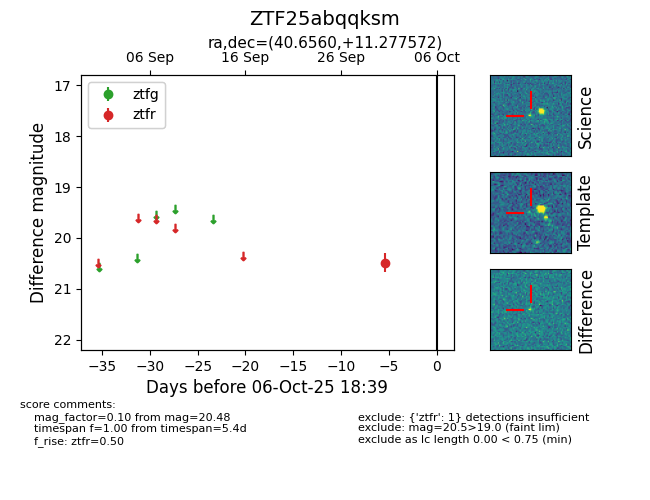

FINK: ZTF25abqqksm
Lasair: ZTF25abqqksm
ALeRCE: ZTF25abqqksm
ZTF25abqqksm (ztf,fink)
equatorial (ra, dec) = (40.6560,+11.27757)
galactic (l, b) = (161.6914,-43.07199)

last ztfr=20.48
1 ztfr detections